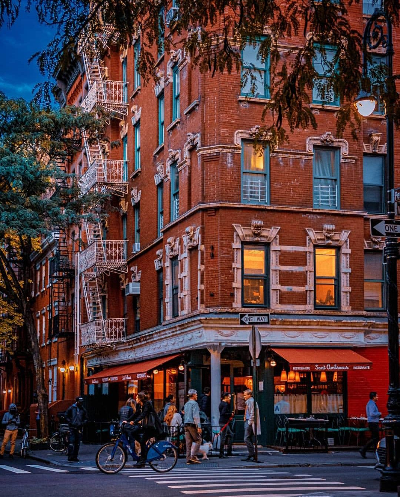

NYC is home to a population of 8.419 million people as of 2019 and has a Gross Domestic Profit(GDP) amounting to a whooping 884 billion according to 2019 statistics.The city is on an Eastern Standard Time zone and utilizes the United States Dollar $ as it's currency
NYC has been under the lead of Warren Wilhem Jr popularly known as Bill de Blasio an American politician serving since 2014 as the 109th mayor of New York City.He is a member of the Democratic Party and has held office of New York City Public Advocate from 2010 to 2013.Below are some pictures of him.
| SEASONS | DESCRIPTION |
|---|---|
| Summer | Tends to be hot and bright but sometimes cool breezes are felt in areas near bodies of water. |
| Fall | Is chilly and crisp which serves as the main reason as to why people are seen wearing layers. |
| Winter | Days are snowy and cold with less daylight. |
| Spring | Is accompanied by light rains,winds,budding flowers and warm temperatures. |
NYC became the first capital of the United States in 1789.
NYC is home to the Met which is the world's most famous art museum

Not to forget a habitat of the American Museum of Natural History which is of high praise and fame as well
Central Park is located in Manhattan and is the most well known park worldwide reason being it is very clean and a real breath of fresh air to take in especially if you are looking for a quiet and calm environment to chill in.

If you are a food lover then you will vibe with NYC for it has pizzerias all over the city,pretzels at hotdog stands and pastrami in local restaurants.

NYC is a host to 3 villages being;
West Village

•Famous Landmarks from the hit tv series F.R.I.E.N.D.S,the tv sitcom of the 90's that was a major hit and the buzz of the street that we all fell in love with miostly because of it's lovable characters and crazy mishaps they had.Well let me refresh your memory;
•To add more on that the tv series was filmed in NYC west village and the apartment is used as a site for tourists and fans who ♥ the tv series.
•The coolest of all 3 villages.Full of cafes,bars,shops and has a comedy club on Macdougal Street.New Yorkers have given it the nickname "the village".
•Most people have described the place as energetic and diverse especially at Washington Square Park as you will find street perfomers, skateboarders,NYU students, kids playing around in the fountain and the locals playing chess or just relaxing.
•It gets more exciting when you choose to take a walk around the streets for you will find town homes, low-key bars and cool restaurants that contribute to giving the neighbourhood an old school vintage vibe.If you a fan of soul music that is jazz of course well you gonna enjoy knowing that there are jazz clubs that pack some serious heat and willl be worth to visit or if you got you feeling a bit blue go check out the comedy clubs to go refresh with a laugh or two.
•A very active neighbourhood full of life and adventure.Do not mistake it for being boring as it may be quiet during the daylight but be warned that when the sun goes down the fun wakes up and it will be packed with everything from parties and get togethers.
•From the creativity and vibe you get from the people living there it is a fact that once you visit east village you will fall in love with it and be hooked on for life.

Borough: Is a town that has its own government.
New York City is divided into five boroughs,namely;
♦ Land Area of 180km².
♦ Population of 2 648 403 million people as of 2020 statistics.
♦ GDP of $91.6 billion according to 2018 statistics.
♦ Land Area of 280km².
♦ Population of 2.287 million people in accordance with the 2019 statistics.
♦ The most common ways of generating income in the area is through the involvement in sectors such as; services,trade and maufacturing & construction in short a diverse economy.
♦ Since there is vast space available it allows Queens to be one of the most active industrial areas.It also has 7000 acres of parklands.
♦ It is home of the two largest airpots in the tri-state area.
♦ Land Area of 152km².
♦ Population of 474 893 thousand people as of 2019.
♦ GDP of $14.5 billion.
♦ One fifth of the city's shoreline and half of it is reserved for industrial use.There are over 170 parks covering more than 12300 acres with 4000 acres as waterfront.
♦ Economy is locally oriented with heavy focus in the health sector,social assistance and retail trade.
♦ Land Area is 110km².
♦ Population is 1.435 million people as of 2019.
♦ This is the only borough located in the mainland of of the United States.
♦ This is where hip-hop was born,where the New York Yankees became a dynasty,home of NYC's leading zoo and botanical garden.
♦ Most of the property is residential and is in the form of multi-units such as apartments rather than single family homes.
♦ The economy is mainly concentrated in the trade and services sector.
♦ Land Area is 59.1km².
♦ Population of 1.6 million people.
♦ The main sources of income come from services,trade,finance and insurance.